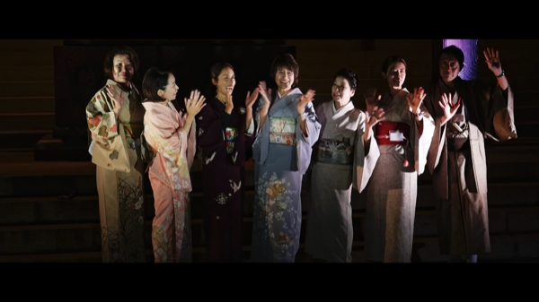
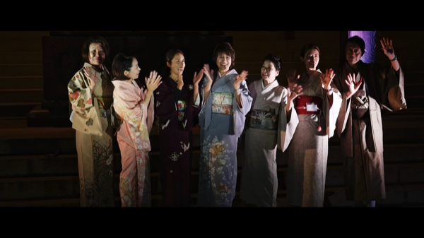
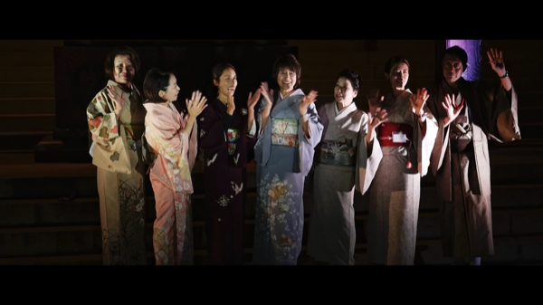
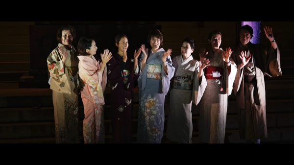
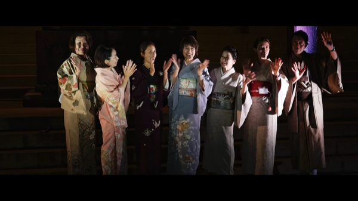

onu
百人きもの KAGAI ~雅~ - ショートフィルム
2022.10 / Movie / Cinematographer & Editor / 1min 30sec

百人きもの KAGAI～雅～ in 2022
の記録映像
Credits
Cinematographer, Editor : 小貫智弥
Cooperation : 根本力 / 福永将也
Organizer : 筑波山華やぎプロジェクト
Instagram
,
HP
Cosponsor : つくば市


 
